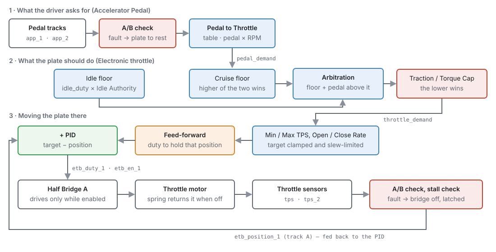
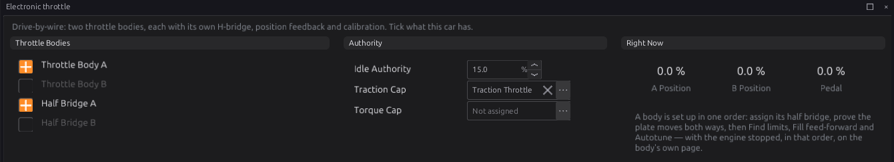
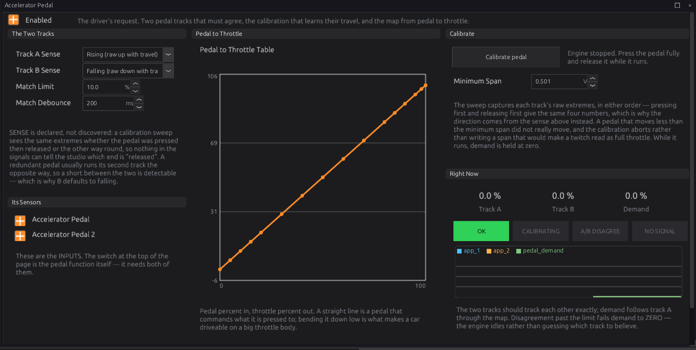
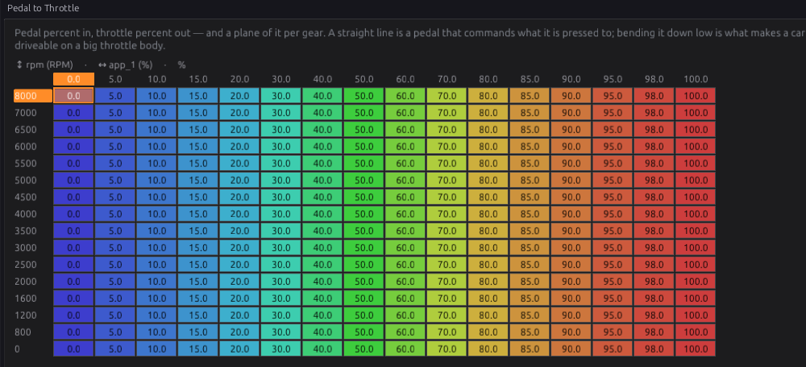
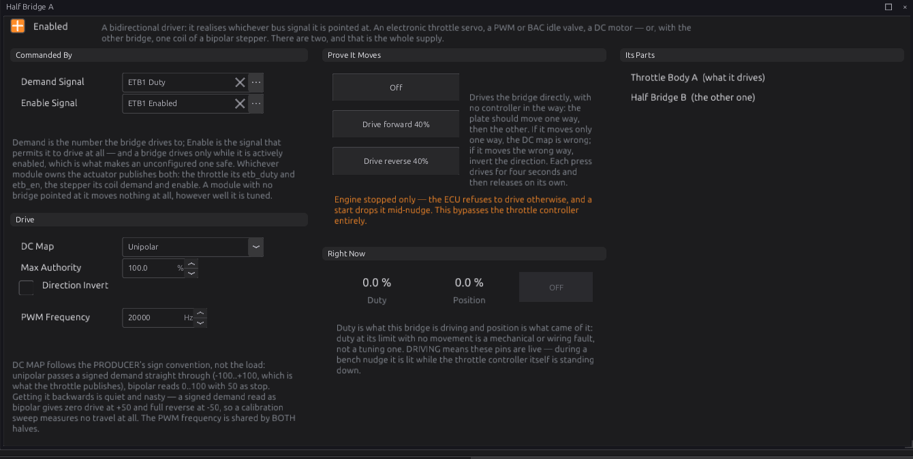
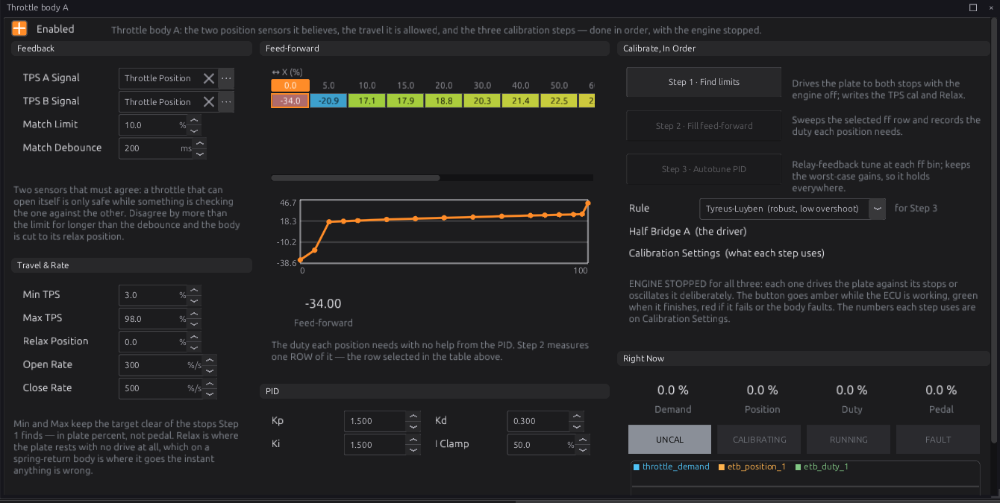
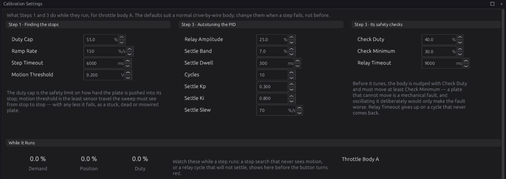

Electronic throttle¶
Intermediate → Advanced
In one sentence: drive-by-wire reads the accelerator pedal, decides where the throttle plate should be, and moves the plate there with a motor — checking both the pedal and the plate with two sensors each, and letting the plate's spring take over the moment anything disagrees.
A throttle that can open itself
With drive-by-wire, the ECU — not a cable — opens the throttle. A wiring mistake, a wrong sensor direction or a skipped calibration step can open the plate when nobody asked for it. Set it up with the engine stopped, follow the steps in order, and prove every safety check works (section Before you drive) before the engine runs. Never fit a throttle body with only one position sensor, and never use a pedal with only one track.
What it does¶
Basic
A drive-by-wire throttle body has a small DC motor that turns the plate against a return spring, and two position sensors on the plate. A drive-by-wire pedal has no cable: it is a sensor with two tracks. Three modules work together:
-
Accelerator Pedal (
app) reads the two pedal tracks, checks they agree, and turns pedal travel into a throttle request through the Pedal to Throttle table. It publishes Pedal Demandpedal_demand. -
Electronic throttle (
electronic_throttle) adds the idle controller's share, lets cruise control raise the request and traction control lower it, and publishes the result as Throttle Demandthrottle_demand. Then, for each throttle body, it runs a position loop that drives the plate to that demand, and it watches both plate sensors and the plate's movement. -
Half Bridge (
h_bridge) is the motor driver. It applies the duty the throttle asks for, in either direction, and only while the throttle says it may.
There can be two throttle bodies (A and B), for an engine with one throttle per bank. Each has its own sensors, its own calibration and its own half bridge.

How it works¶
Intermediate
1 · The pedal¶
Track A of the pedal (app_1) is the one that is used; track B (app_2) is the check. The two must
read within APP Match Error Limit (default 10 %) of each other. If they disagree for longer than
APP Match Debounce (default 200 ms), or track A disappears, the pedal is not trusted:
- Pedal Demand goes to 0 and a code is set (P2138 for a disagreement, P1780 for a missing track A).
- The throttle switches its motor off, so the spring takes the plate to its rest position (the "limp-home" position, a little open). The engine keeps running at a fast idle.
- The fault holds until the key is turned off, even if the tracks agree again. A pedal that failed once is not trusted again on the same drive.
When the pedal is trusted, track A goes through the Pedal to Throttle table (pedal % across, engine speed down, optionally a plane per gear). The default table is a straight line: 10 % pedal asks for 10 % throttle.
2 · The throttle demand¶
The throttle works out one number, Throttle Demand, in this order:
- Cruise. While cruise control is holding a speed, its request is a floor under the pedal: the higher of the two is used, so pressing the pedal always overrides cruise.
- Idle floor. The idle controller's Idle Duty is scaled by Idle Authority (default 15 %):
100 % idle duty opens the plate 15 %. The pedal then works above that floor, so the full pedal range
is still 0–100 %:
demand = floor + pedal × (100 − floor) / 100. - Caps. Traction Cap Signal (wired to traction control by default) and Torque Cap Signal can each limit the demand. The lower one wins. A cap that is not assigned, or not being published, has no effect.
Throttle Demand is a bus signal, so a Lua script can change it before the plate follows it (chapter 35).
3 · The position loop¶
For each throttle body, 1000 times a second:
- The target is Throttle Demand, clamped between Min TPS (default 3 %) and Max TPS (default 98 %), so the plate never hits its end stops in normal use.
- The target is slew-limited: it moves at most Open Rate Limit (default 300 %/s) opening and Close Rate Limit (default 500 %/s) closing. A sudden stab of the pedal becomes a fast ramp.
- The Spring Feed-Forward table gives the duty that holds the plate at the target — against the return spring — with no help from the controller.
- A PID controller adds a correction from the difference between the target and where the plate
is (sensor A,
etb_position_1). The integral part is limited to Integral Clamp (default 50 %). - The total duty, −100 to +100 %, goes to the half bridge. Positive opens, negative closes.
The feed-forward does most of the work; the PID only trims. That is why the calibration has three steps: find the stops, measure the feed-forward, then tune the PID.
Plate position is measured in plate percent: 0 % is the closed stop and 100 % the open stop, as found by calibration. This is not the same as pedal percent.
4 · Safety checks¶
The throttle stops driving the motor — and the spring closes the plate to its rest position — when:
| Check | What trips it | Code | Clears |
|---|---|---|---|
| Plate sensors disagree | Sensors A and B differ by more than TPS Match Error Limit (default 10 %) for longer than TPS Match Debounce (default 200 ms), or a sensor stops reading | P2135 | latched |
| Plate stuck closed | The loop is pushing the plate open (error over 8 %, duty over 25 %) and it moves less than 1.5 % in 600 ms | P2112 | latched |
| Plate stuck open | The same, while pushing the plate closed | P2111 | latched |
| Pedal not trusted | Pedal fault (section 1) | P2138 / P1780 | at key-off |
| Key off | Ignition switched off | — | at key-on |
| Not calibrated | The body has never been through Find limits | — | after Find limits |
A latched fault stays until a successful Find limits, or until the ECU restarts. Turning the key off and on does not clear it, and neither does clearing the codes. The motor stays off and the engine runs on the plate's rest position.
5 · The key-on check¶
A calibration saved in the tune is not trusted blindly. Each time the key is turned on:
- The throttle reads both plate sensors and checks they agree and are inside the calibrated range. If not, P2135 latches.
- If the engine is stopped, it then sweeps the plate to the closed stop and to the open stop and checks both are where the calibration says (within 10 %). If a stop has moved, or the plate cannot reach it, P2111 (the closed stop) or P2112 (the open stop) latches. If sensor B does not move with the plate, P2135 latches.
- Only then does the loop close and the pedal work.
The plate opens fully at key-on
The key-on sweep drives the plate wide open for a moment. Fuel and spark are cut while it runs and for half a second afterwards, so the engine cannot start into an open throttle — but it does mean the engine will not fire if you crank straight away. With the default settings the check takes two to three seconds. Turn the key, wait until the throttle has gone quiet, then start.
If the key is turned on with the engine already turning, the sweep is skipped and the sensor check alone is used.
6 · The half bridges¶
The ECU has two H-bridge drivers, Half Bridge A and Half Bridge B (chapter 12 has the pins).
Each drives a motor both ways. A half bridge does nothing clever: it applies its Demand Signal
while its Enable Signal is on, and switches off if either signal is missing. By default Half Bridge
A takes etb_duty_1/etb_en_1 (throttle body A) and B takes etb_duty_2/etb_en_2.
The same two bridges also drive a stepper idle valve (chapter 21), which needs both. So an engine can have an electronic throttle or a bridge-driven stepper valve, not both. Two throttle bodies also use both bridges.
Before you start¶
Basic
You need:
- A drive-by-wire throttle body with two position sensors. Most have one track rising and one falling with plate opening; that is fine.
- A drive-by-wire pedal with two tracks.
- The throttle motor wired to a half bridge output, and the four sensor signals wired to analog inputs, each with its 5 V supply and ground (chapters 11 and 12).
- A good battery or a bench supply. The motor draws several amps while it moves.
- The sensors set up in chapter 17: Throttle Position and Throttle Position 2 for body A, Accelerator Pedal and Accelerator Pedal 2 for the pedal, each on the right analog input. Their calibration is written for you by the steps below.
Work with the engine stopped and the key on throughout. Every calibration step refuses to run while the engine turns, and stops if it starts.
Setting it up¶
Intermediate
The Electronic throttle page lists the throttle bodies and the half bridges, with Idle Authority and the two caps. The note on it gives the order: assign the half bridge, prove the plate moves both ways, then Find limits, Fill feed-forward and Autotune.

Step 1 — The pedal¶
Open Configuration ▸ Engine Functions ▸ Accelerator Pedal and tick Enabled. Under Its Sensors, both pedal sensors must be on.

-
Set Track A Sense and Track B Sense: which way each track's voltage moves as the pedal is pressed. Check it with a meter or by watching the sensor's raw voltage in the studio. The ECU cannot work this out itself, because pressing then releasing gives the same readings as releasing then pressing. Most pedals have one track rising and one falling (the default: A rising, B falling).
-
Press Calibrate pedal, then within 5 seconds press the pedal all the way down and let it go. The button turns amber while it runs, then green if it worked or red if it did not. The ECU Console says what it measured.
- It fails if either track moved less than Minimum Span (default 0.5 V). Press further, or check the wiring.
- Check the result under Right Now: foot off, both tracks read about 0 %; pedal down, both about 100 %; in between, they move together. The OK lamp is lit. If one track reads 100 % with your foot off, its Sense setting is the wrong way round — change it and calibrate again.
Step 2 — The pedal map¶
Pedal to Throttle turns pedal travel into a throttle request, by engine speed. Start with the straight-line default. Change it later, when the engine runs (see Tuning it).

Step 3 — The half bridge¶
Open Configuration ▸ Electrical ▸ Half Bridges ▸ Half Bridge A and tick Enabled. The defaults are right for throttle body A: Demand Signal ETB1 Duty, Enable Signal ETB1 Enabled, DC Map Unipolar, Max Authority 100 %, PWM Frequency 20000 Hz.

Now prove the motor moves, before any controller is involved:
- Press Drive forward 40%. The bridge drives for four seconds, then lets go. The plate should open, and Position should rise.
- Press Drive reverse 40%. The plate should push closed.
- If it moves the wrong way — forward closes — tick Direction Invert (or swap the two motor wires). If it moves only one way, DC Map is wrong: the throttle needs Unipolar.
Position may not read correctly yet (it is calibrated in the next step), but it must move.
Step 4 — Throttle body A, Find limits¶
Open Configuration ▸ Engine Functions ▸ Electronic throttle ▸ Throttle body A and tick Enabled. The state lamps under Right Now show UNCAL (not calibrated yet).

- Under Feedback, check TPS A Signal is Throttle Position and TPS B Signal is Throttle Position 2.
- Press Step 1 · Find limits. The ECU:
- switches the motor off and lets the plate settle on its spring, and records that rest position;
- drives the plate gently closed until it stops moving, and records the closed stop;
- drives it open until it stops moving, and records the open stop;
- writes the calibration of both plate sensors (closed = 0 %, open = 100 %) and the Relax Position.
- The button turns green and the lamp shows RUNNING. The ECU Console shows the raw readings, the travel and the rest position. The plate now holds the demand: with foot off, it sits at Min TPS plus any idle floor.
It fails, with a message in the ECU Console, if the plate does not reach a stop within Step Timeout (default 6 s), or if either sensor moves less than Motion Threshold (default 0.2 V) — a stuck plate, a dead sensor or a wiring fault. Settings for this step are on Calibration Settings.
Step 5 — Fill feed-forward¶
Press Step 2 · Fill feed-forward. The ECU drives the plate to the open stop, then sweeps it slowly closed and open again, and records the duty needed at each position in the Spring Feed-Forward table. It uses the row selected in the table (there is one row unless you have added a coolant axis).
The shipped table holds values measured on one particular throttle body. Run this step for yours.
Step 6 — Autotune¶
Choose a Rule (the default, Tyreus-Luyben, is the most cautious) and press Step 3 · Autotune PID. The ECU first nudges the plate open to check it moves (Check Duty, Check Minimum). Then at each feed-forward point it holds the plate still and makes it oscillate on purpose, measures how it responds, and keeps the worst case. From that it sets Kp, Ki and Kd.
The ECU Console lists the gains every rule would give and marks the one applied. A point that "could not settle" or gave "no clean oscillation" is skipped; see Troubleshooting.

Step 7 — Save¶
The three steps write their results into the tune in the ECU. Press Burn to keep them. Turn the key off and on: the key-on check (section 5) should run and the lamp should come back to RUNNING.
Before you drive¶
Prove the safety checks with the engine stopped and the key on, watching the lamps:
- Pedal: unplug the pedal connector. The pedal page shows NO SIGNAL or A/B DISAGREE, the throttle motor switches off and the plate goes to rest. Plug it back in; it stays faulted until you turn the key off and on.
- Plate: unplug the throttle body's sensor connector. FAULT lights and P2135 is set. Plug it back in and run Find limits to clear it.
- Stuck plate: with the pedal pressed a little, hold the plate so it cannot move (keep fingers out of the bore — use a piece of wood). Within a second P2112 is set and the motor stops.
Do not drive until all three work.
Worked examples¶
Intermediate
Example 1 — one throttle body
A four-cylinder with one drive-by-wire throttle body and a two-track pedal.
- Sensors (chapter 17): Throttle Position, Throttle Position 2, Accelerator Pedal, Accelerator Pedal 2, all enabled on their analog inputs.
- Accelerator Pedal: Enabled; Track A Rising, Track B Falling; calibrated.
- Half Bridge A: Enabled, defaults.
- Throttle body A: Enabled; Find limits, Fill feed-forward, Autotune; Burn.
- Idle Control (chapter 21): no idle valve. Idle Duty opens the plate through Idle Authority.
Example 2 — two throttle bodies
A V8 with one throttle body per bank. Body B uses Half Bridge B and, by default, the auxiliary
inputs aux_2 and aux_3 as its two sensors (set them up in chapter 17). Calibrate each body on its
own page; only one calibration can run at a time. Both bodies follow the same Throttle Demand. With
both bridges in use there is none left for a stepper idle valve.
Example 3 — idle with drive-by-wire
Idle Authority 15 %, idle Base Duty 40 %: the idle floor is 40 % × 15 % = 6 % plate. With the pedal half pressed, demand is 6 + 50 × 0.94 = 53 %. Raise Idle Authority if the idle controller runs out of range (Idle Duty sitting at its maximum); lower it for finer idle control.
Tuning it¶
Advanced
The pedal map. The throttle body's airflow is not linear: the first 20 % of plate opening gives most of the engine's airflow at low speed. A straight pedal map makes the car jumpy off idle. Make the low end shallower — for example 25 % pedal asking for 10 % throttle — while keeping 100 % pedal at 100 %. Use the engine speed rows to make it gentler at low speed only.
Response. If the plate lags the pedal, raise Open Rate Limit. If the car lurches on a sharp stab of the pedal, lower it.
The loop. Log throttle_demand, etb_position_1 and etb_duty_1 together, and step the pedal.
- The plate overshoots and rings: lower Kp and Kd, or re-run Autotune with a more cautious rule.
- The plate stops short and creeps to the target: the feed-forward is off. Re-run Fill feed-forward (warm, if the body is sensitive to temperature), or raise Ki.
- The duty buzzes with the plate still: lower Kd.
etb_iterm_1grows over weeks: the body is getting stiff (dirt or a weak spring). Clean it and re-run the three steps.
Diagnostics¶
Intermediate
| Code | Meaning | What sets it | What to check |
|---|---|---|---|
| P2135 | Throttle position sensors A/B disagree, or feedback lost | Tracks differ past TPS Match Error Limit for TPS Match Debounce; a sensor not reading; key-on check outside the calibrated range | Sensor wiring and 5 V supply; run Find limits |
| P2112 | Throttle stuck closed | Pushing open with no movement for 600 ms; key-on sweep could not reach the open stop, or found it moved | Motor wiring; the bridge; ice or dirt; a seized plate |
| P2111 | Throttle stuck open | Pushing closed with no movement; key-on sweep could not reach the closed stop, or found it moved | Something holding the plate open; the stop screw |
| P2138 | Pedal tracks A/B disagree | Tracks differ past APP Match Error Limit for APP Match Debounce | Pedal wiring; Track Sense settings; calibrate the pedal |
| P1780 | Pedal track A missing | Accelerator Pedal sensor not reading | Pedal connector; sensor enabled |
| P1760 / P1762 | Half Bridge A / B: demand signal missing | Bridge enabled, its Demand Signal unset or not published | Throttle body enabled? Demand Signal |
| P1761 / P1763 | Half Bridge A / B: enable signal missing | Bridge enabled, its Enable Signal unset or not published | Throttle body enabled? Enable Signal |
The throttle codes are severity 3, the pedal and bridge codes severity 2: that decides which Protection Level reacts, if you have enabled one (chapter 29). Whether or not a level is enabled, the throttle itself always switches its motor off for P2135, P2111, P2112, P2138 and P1780.
Live channels: pedal_demand, app_state, throttle_demand, etb_position_1, etb_duty_1,
etb_en_1, etb_target_1, etb_iterm_1, etb_state_1 (and _2 for body B), hbridge_duty_1,
hbridge_en_1.
ETB State etb_state_1: 0 UNCAL (not calibrated, or waiting for the key-on check),
1 CALIBRATING (a step or the key-on sweep is running), 2 RUNNING (the loop is closed),
3 FAULT. App State app_state: 0 OK, 1 calibrating, 2 tracks disagree, 3 no signal.
Engine protection does not limit the throttle
A protection level can enrich, retard, trim boost and lower the rev limit (chapter 29), but it cannot cap the electronic throttle's opening.
Troubleshooting¶
Basic → Advanced
| Symptom | Likely causes | Check |
|---|---|---|
| Pedal does nothing, lamp UNCAL | Find limits never run (Relax Position is 0), or the key-on check has not finished | Run Find limits; wait after key-on |
| Pedal does nothing, lamp RUNNING | Pedal module off or faulted; Pedal to Throttle all zero | Accelerator Pedal page: Enabled, OK lamp; the map |
| Lamp FAULT after every key-on | Key-on check failing: a sensor or a stop has changed | ECU Console message; run Find limits |
| Engine will not fire straight after key-on | The key-on sweep cuts fuel and spark | Wait two to three seconds before cranking |
| Drive forward closes the plate | Motor wired the other way | Direction Invert |
| Plate moves only one way | DC Map set to Bipolar | DC Map Unipolar |
| Find limits: "no closed stop" / "no open stop" | Plate cannot reach a stop in time; Duty Cap below the spring's breakaway | Motor wiring; raise Duty Cap a little; Step Timeout |
| Find limits: "TPS-B span too small" | Sensor B dead or on the wrong input | TPS B Signal; sensor B wiring |
| Autotune "could not settle" | The plate cannot hold inside the Settle Band | Widen Settle Band; re-run Fill feed-forward first |
| Autotune "no clean oscillation" | Relay too small to move the plate cleanly | Raise Relay Amplitude |
| Pedal faults on the road | Bad pedal connector; Match Limit too tight | Log app_1, app_2; the connector |
| P1760/P1761 with no throttle fitted | Half Bridge enabled with no throttle body enabled | Disable the bridge, or point it at what it should drive |
| Button turns red at once | The engine is turning | Stop the engine |
| Button does nothing | Another calibration is running (only one at a time, across both bodies); Steps 2 and 3 need the lamp on RUNNING | Wait for it; run Step 1 first |
Settings reference¶
Accelerator Pedal:
| Setting | What it does |
|---|---|
APP Enabledapp.enabledRange: Off or On Default: Off |
Accelerator-pedal input for drive-by-wire: app_1 is the pedal value, app_2 is a cross-check, and the pair publishes pedal_demand through the pedal-to-throttle table. Off, nothing publishes pedal demand and the throttle falls to its idle floor. |
APP A Track Senseapp.app1_senseRange: one of: Rising (raw up with travel), Falling (raw down with travel) Default: Rising (raw up with travel) |
Which way track A's RAW reading moves as the pedal is pressed. This is DECLARED rather than discovered, and it has to be: a calibration sweep sees the same four raw extremes whether the pedal was pressed then released or released then pressed, so no procedure can tell which extreme was the resting one. Getting it backwards gives a track that reads 100% with your foot off. |
APP B Track Senseapp.app2_senseRange: one of: Rising (raw up with travel), Falling (raw down with travel) Default: Falling (raw down with travel) |
A redundant pedal usually runs its second track the opposite way, so a short between the tracks is detectable. Default Falling. |
APP Match Error Limitapp.match_err_pctRange: 0.0 to 100.0 Default: 10.0 Units: % |
A/B pedal disagreement (%) beyond which pedal_demand fails safe to 0. |
APP Match Debounceapp.match_msRange: 0 to 5000 Default: 200 Units: ms |
Disagreement must hold this long before faulting (rejects blips). |
Pedal Calibrate Min Spanapp.cal_min_spanRange: 0 to 4095 Default: 410 Units: ADC |
Released->pressed pedal voltage must move at least this far during pedal calibrate; less => not moved -> abort. |
Pedal to Throttle X Channelapp.pedal_to_throttle_table_x_srcRange: -1 to 32767 Default: 339 |
WHICH SIGNAL the X axis of 'Pedal to Throttle' is looked up on. The axis holds the breakpoints; this says what is compared against them, so changing it re-points the table at a different quantity without moving a single cell — and the breakpoints, chosen for the old signal's range and units, will almost certainly need redrawing. |
Pedal to Throttle Y Channelapp.pedal_to_throttle_table_y_srcRange: -1 to 32767 Default: 319 |
WHICH SIGNAL the Y axis of 'Pedal to Throttle' is looked up on. The axis holds the breakpoints; this says what is compared against them, so changing it re-points the table at a different quantity without moving a single cell — and the breakpoints, chosen for the old signal's range and units, will almost certainly need redrawing. |
Pedal to Throttle Z Channelapp.pedal_to_throttle_table_z_srcRange: -1 to 32767 Default: 131 |
WHICH SIGNAL the Z axis of 'Pedal to Throttle' is looked up on. The axis holds the breakpoints; this says what is compared against them, so changing it re-points the table at a different quantity without moving a single cell — and the breakpoints, chosen for the old signal's range and units, will almost certainly need redrawing. |
Pedal to Throttle Z Axis Enabledapp.pedal_to_throttle_table_z_enRange: Off or On Default: Off |
Use the Z axis of 'Pedal to Throttle' as a real dimension. Off, the table collapses to a curve on its remaining axes and this one is ignored entirely — the right default for most optional axes, since a dimension nobody calibrates is a set of duplicate rows that still has to be kept in step. |
Pedal to Throttle X Axis binsapp.pedal_to_throttle_table_x_axis_nRange: 2 to 16 Default: 16 |
How many breakpoints of 'Pedal to Throttle X Axis' are LIVE, out of 16 allocated. Shrinking the axis does not delete the values past the end — they stay in the tune and reappear if it is grown again. Every table sharing this axis is resized with it. Fewer, well-placed breakpoints beat many evenly-spaced ones: resolution is only worth spending where the surface actually bends. |
Pedal to Throttle Y Axis binsapp.pedal_to_throttle_table_y_axis_nRange: 2 to 16 Default: 16 |
How many breakpoints of 'Pedal to Throttle Y Axis' are LIVE, out of 16 allocated. Shrinking the axis does not delete the values past the end — they stay in the tune and reappear if it is grown again. Every table sharing this axis is resized with it. Fewer, well-placed breakpoints beat many evenly-spaced ones: resolution is only worth spending where the surface actually bends. |
Pedal to Throttle Z Axis binsapp.pedal_to_throttle_table_z_axis_nRange: 2 to 4 Default: 4 |
How many breakpoints of 'Pedal to Throttle Z Axis' are LIVE, out of 4 allocated. Shrinking the axis does not delete the values past the end — they stay in the tune and reappear if it is grown again. Every table sharing this axis is resized with it. Fewer, well-placed breakpoints beat many evenly-spaced ones: resolution is only worth spending where the surface actually bends. |
Pedal to Throttleapp.pedal_to_throttle_tableRange: 0.0 to 100.0 Default: 16 × 16 table Units: % |
Pedal position in, throttle demand out — the pedal MAP, and the main character knob for drive-by-wire. A straight 1:1 line makes the pedal literal; a shallow start with a steeper top gives fine control off idle without losing full travel. It is the demand only: what the plate actually does with it is the throttle controller's business. |
Pedal to Throttle X Axisapp.pedal_to_throttle_table_x_axisRange: 0 to 0 Default: 16-point curve Units: % |
— |
Pedal to Throttle Y Axisapp.pedal_to_throttle_table_y_axisRange: 0 to 0 Default: 16-point curve |
— |
Pedal to Throttle Z Axisapp.pedal_to_throttle_table_z_axisRange: 0 to 0 Default: 4-point curve |
— |
Electronic throttle:
| Setting | What it does |
|---|---|
Idle Authorityelectronic_throttle.idle_authorityRange: 0.0 to 100.0 Default: 15.0 Units: % |
Max throttle the idle controller may command (idle_duty 100% -> this % plate). The idle floor under a closed pedal. |
Traction Cap Signalelectronic_throttle.traction_cap_srcRange: -1 to 32767 Default: 21 |
Wired to traction control by default — it publishes 100 % (no cap) whenever it is not intervening, so the default costs nothing and traction control can actually pull throttle. Bus signal (%) that caps throttle for traction control. Unassigned = none. |
Torque Cap Signalelectronic_throttle.torque_cap_srcRange: -1 to 32767 Default: -1 |
Bus signal (%) that caps throttle for torque management. Unassigned = none. |
Half Bridge:
| Setting | What it does |
|---|---|
PWM Carrierh_bridge.pwm_freq_hzRange: 1 to 50000 Default: 20000 Units: Hz |
Shared DMA-PWM carrier for both bridges. Set high (20 kHz) to suppress audible whine. |
Related¶
- Chapter 11 — Wiring sensors (throttle and pedal sensors)
- Chapter 12 — Wiring outputs (the H-bridge outputs)
- Chapter 17 — Sensors (setting up the four sensors)
- Chapter 21 — Idle (Idle Duty and the stepper valve)
- Chapter 26 — Launch, shift and traction (the traction cap)
- Chapter 29 — Protection (protection levels)
- Chapter 35 — Lua (changing Throttle Demand from a script)